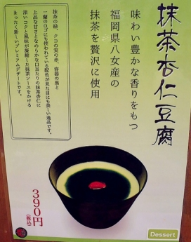
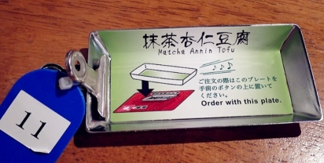

(300元商店→Pet Paradise→蛋塔→固力果專賣店→一蘭拉麵→章魚燒→國產雞肉)
示意圖
(300元商店只營業至21:00)
(Pet Paradise只營業至20:30)
PABLO 道頓堀店 [官網]
營業時間：10:00~23:00 (內用只到22:00, 最後點餐21:00)
※心齋橋也有分店

PABLO的半熟起司蛋糕分成兩種熟度
レア (RARE)跟ミディアム (MEDIUM)
レア大概就是三分熟熟, 切開時起司還有濃稠的流動感
ミディアム是五分熟的半熟狀態, 餡比較不像レア會有爆漿感

焦糖口味則是賣最好的!

內用的香蕉巧克力

內用的原味版本+草莓醬
(內用會比較小顆, 可搭冰淇淋與果醬)

アンドリューのエッグタルト Lord Stow's bakery 澳門安德魯餅店 [官網]
營業時間：10:00~22:00

原味237

固力果專賣店 [官網]
營業時間：10:00~22:00

2015年新推出特濃巧克力

彩色POCKY

一蘭拉麵&屋台館 [官網]
營業時間：24小時

厲害的辣椒粉

杯墊 580

屋台館有傳統K書中心座位也有一桌的
屋台館很多中文服務生

點完餐店員會問
要坐 味集中個室(2F, 3F) or 屋台座位(4F, 5F)

或是點餐時就要按機器的顏色購買

點餐
1.先投入紙鈔或零錢
2.選拉麵(正常版790)、替玉(加麵1份)、半替玉(加麵半份)
3.選配料及小菜(半熟蛋!!)
4.按下最下方中間紅色按鈕

抺茶杏仁豆腐


將甜點券和拉麵券給店員後會得到小碟

吃完麵後要吃甜點, 按下服務鈴並讓店員收走即可
PS. 要加點東西時也是比照辦理

如果需要追加麵(替玉), 叉燒, 蛋...等，在筷子套背面勾選後, 按下桌上服務鈴
就會有服務生過來收取單子以及錢

あっちち本舗 章魚燒 [官網]
營業時間：10:00~02:00
幾乎現點現做 要等!


8種口味(前4種最多人選)
1.元祖特調(醬汁)
2.元禍特調(醬汁)蛋黃醬
3.醬油
4.醬油蛋黃醬
5.鹽
6.鹽蛋黃醬
7.橘子
8.橘子蛋黃醬

9顆500 (人氣第1: 醬油蛋黃醬, 人氣第2: 元祖蛋黃醬)

醬油蛋黃醬

點餐時要告知是否加蔥&是否外帶
地下室可用餐, 戶外也有座位

金のとりから なんば戎橋店 [官網]
營業時間：11:00~22:00
日本國產雞肉專門業者開設

金のとりから 金炸雞 (雞柳條, 小份量就滿多的)

醬料
オリジナルスパイス 原味香辣料 人氣No.1
マヨネーズ 蛋黃醬
スイートチリソース 甜辣醬
レモン 檸檬
モンゴルの岩塩 蒙古岩鹽
チョコレートソース 巧克力醬
カレー 咖哩 (関東限定)
バーベキューソース 烤肉醬 (関西限定)
柚子ポン酢 柚子醬橙子 (関西限定)
うめドレッシング 梅花敷料
ハニーマスタードソース 蜂蜜芥末醬
レッドペッパー 辣椒

戎橋店限定: Garlic Butter大蒜奶油醬
銀のとりから 銀炸雞 (炸雞皮, 冷的!?)